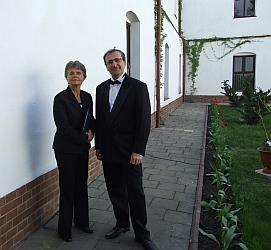

do aktualności
do aktualności2013-05-04
Żegnamy Odessę i pakujemy się do autokaru.
Przed nami 490 km i koncert. Jesteśmy na miejscu.
Ksiądz proboszcz Adam Przywulski przyjął Cameratę kanapeczkami i pyszną zupą, zapowiadając z uśmiechem, że reszta po koncercie, jak zasłużymy :)
Nie ma dużo czasu, trzeba wszystko przygotować do mszy (tutaj również uroczystość zaczyna się od mszy, którą oprawiamy muzycznie) i koncertu.
Chór już gotowy, soliści też. Jeszcze zaśpiewamy z Polonią „Barkę” pod pomnikiem Jana Pawła II

i udajemy się do kościoła. Zaczyna się msza. Camerata śpiewa zza ołtarza, nie z chóru, o co prosił ksiądz proboszcz.
Kończy się msza i rozpoczynamy kolejny trzeci już na naszym tournée koncert.
Koncert idzie wspaniale. Słuchacze oczarowani. Soliści grają i śpiewają „jak z nut”.
Na koncercie wśród słuchaczy obecni są: m. in. 40 osobowa grupa Polaków z miasta Chmielnicki z prezesem Obwodowego Związku Polaków Ukrainy - Franciszkiem Micińskim. Wszyscy z przypiętymi na piersi biało-czerwonymi wstążkami.
Podziękowania i wspólne odśpiewanie „Roty”.
Potem już tylko rozmowy, wspomnienia, wywiady i koniec.
Wracamy przebrać się i na kolacje. Chyba sobie zasłużyliśmy, bo była :)
Po kolacji spotkanie w świetlicy na krótkie podsumowanie naszego tournée.
Jest ok, pani dyrygent zadowolona. Jutro wracamy do Wieliczki.
do aktualności


 Prowadzenie strony: Małgorzata Wysocka-Cebula
Prowadzenie strony: Małgorzata Wysocka-Cebula